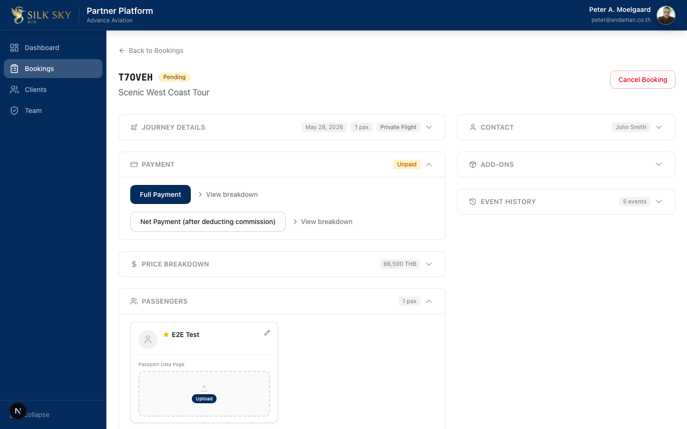
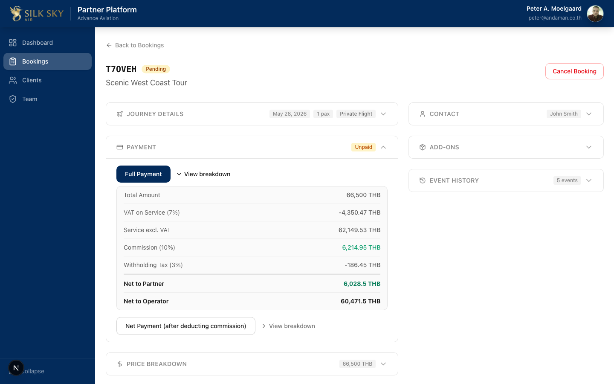

Commission & Payment Breakdown (Partner Portal)
App: Partner Portal Who uses it: Partner staff settling a booking — deciding whether the partner collects the full amount (Full Payment) or only their commission (Net Payment), and seeing exactly how VAT, commission, and withholding tax split the money. What it does: On an unpaid booking, the Payment section computes a full line-by-line breakdown for both payment directions. It extracts Thai VAT from the inclusive total, applies the partner's commission to the service amount excluding VAT, and — for Full Payment only — deducts 3% withholding tax. VAT-on-commission is added when the partner is VAT-registered. The breakdown shows the net to partner and net to operator for each direction.
Before you start
- Local URL:
http://localhost:3050(staging / production: the same paths onstaging.partner.silkskyair.com/partner.silkskyair.com). - Account: Sign in with a Partner Portal account whose organization has a non-zero Commission % (e.g.
peter@andaman.co.thfor Advance Aviation on local). - Prerequisites: an unpaid booking assigned to your partner org with at least one priced item, so the total is non-zero and commission applies.
- Good to know — the four scenarios: the math has two axes — who collects (Full / Direct vs Net / Indirect) and is the partner VAT-registered (yes adds VAT-on-commission, no leaves it at zero). That's four combinations; the breakdown grid renders the correct rows for whichever applies.
Step-by-step
Step 1 — Open an unpaid booking's Payment section
From the Bookings list, open an unpaid booking. The Payment section is shown with the two payment options.

What you should see: a Full Payment button (always shown) and, when commission applies, a Net Payment (after deducting commission) button. Each has a View breakdown toggle next to it.
Step 2 — Expand the Full Payment breakdown
Click View breakdown beside Full Payment. The grid expands.

What you should see (Full / Direct — the operator collected the full amount and pays the partner their commission):
- Total (incl. VAT) — the booking total.
- VAT on service (7%) — extracted from the inclusive total (total × 7 / 107), shown as a deduction.
- Service (excl. VAT) — total minus the VAT above.
- Commission (X%) — the partner's percentage of the service-excl-VAT amount.
- Withholding tax (3%) — deducted from the commission. This row appears on Full Payment only.
- VAT on commission (7%) — appears only if the partner is VAT-registered.
- Net to partner — commission + VAT-on-commission − withholding tax.
- Net to operator — total − net to partner.
Worked example (Full Payment, not VAT-registered): total 57,000 THB, VAT 7%, commission 10%, WHT 3%. VAT on service = 57,000 × 7 / 107 = 3,728.97 · Service excl. VAT = 53,271.03 · Commission = 10% = 5,327.10 · Withholding tax = 3% = 159.81 · Net to partner = 5,167.29 · Net to operator = 51,832.71.
Step 3 — Expand the Net Payment breakdown
Collapse Full Payment and click View breakdown beside Net Payment.
What you should see (Net / Indirect — the partner collected the full amount from the customer and transfers the remainder to the operator):
- The same Total / VAT / Service / Commission rows.
- No withholding-tax row — on Net Payment the partner already holds their commission, so there's no operator-to-partner payment to withhold tax from.
- Net to partner — commission (+ VAT-on-commission if registered), with no WHT deduction.
- Net to operator — total − commission (− VAT-on-commission if registered).
Worked example (Net Payment, not VAT-registered): total 28,000 THB, commission 10% → Net to partner = 2,616.82, Net to operator = 25,383.18 (no WHT deducted).
Tips & common questions
- Why does withholding tax only show on Full Payment? WHT is what the operator withholds when paying the partner. On Net Payment the partner already has their commission in hand (they collected from the customer), so there's no operator-to-partner payment to withhold from. The breakdown and the recorded settlement agree on this — WHT is recorded as 0 on Net.
- When does "VAT on commission" appear? Only when the partner organization is flagged VAT-registered. A VAT-registered partner adds 7% VAT on top of their commission; a non-registered partner does not, so the row is hidden and the value is 0.
- The numbers are off by a cent from my spreadsheet. Each intermediate step is rounded to 2 decimals to match the original Excel reference. Re-deriving from the rounded totals can differ by a rounding cent — trust the per-row values shown.
- Net Payment isn't offered. It only appears when commission applies (Commission % > 0). A zero-commission org sees Full Payment only.
- Where do these percentages come from? VAT and commission are snapshotted onto the booking from the partner/org configuration at booking time, so historical bookings keep the rate that was in effect when they were made.
Reference
- Code: silkskyair-partner/lib/bookings/commission.ts —
calculateCommission(input)returns the fullCommissionBreakdown. WHT =paymentCollectedBy === "direct" ? commission × wht% : 0. VAT-on-commission =vatRegistered ? commission × vat% : 0. - UI: silkskyair-partner/components/bookings/booking-payment-section.tsx — the
BreakdownGrid(data-region="commission-breakdown"); the withholding-tax row renders only whendata.paymentCollectedBy === "direct". - Shipped: W23 — partner commit
fca8681(F1.12).